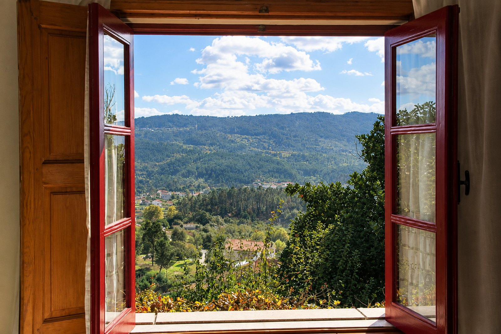

quintadecanhoes.com
Como funcionam os pedidos de reserva, como mudar os preços e as suas contas.
Como chegam os pedidos2
Pagamentos e regras3
Preços e promoções4
As suas contas5
Apoio6
Quando alguém pede uma reserva no site, recebe no seu email (casadecanhoes@gmail.com) uma mensagem de «Reservas do site» com o título:
Abra o email e carregue em «Abrir o pedido». Vê tudo numa página: datas, quarto, pessoas, total e o sinal. Depois, escolha um dos botões.
| Se… | Carregue em… |
|---|---|
| Tem lugar para essas datas | Confirmar disponibilidade O hóspede recebe os dados para pagar o sinal. |
| Já não tem lugar | Não há estas datas A página sugere outras datas ou outros quartos. Escolha até 3 e o hóspede escolhe uma. |
| Não quer aceitar o pedido | Recusar o pedido |
| O sinal já entrou na conta | Recebi o sinal O hóspede recebe a confirmação da reserva. |
| O sinal não chegou a tempo | O sinal não chegou A reserva é cancelada e as noites ficam livres. |
| O hóspede desiste depois de pagar | Cancelar reserva A página diz quanto devolver. |
| O hóspede diz que não recebeu o email | Enviar por WhatsApp Abre o WhatsApp com os dados de pagamento já escritos. |
Se tiver pedidos por responder ou sinais em atraso, recebe de manhã um email com o resumo. Se estiver tudo em dia, não recebe nada.
Os preços do site e as promoções mudam-se numa página só sua: Mudar os preços. A página explica cada passo; aqui fica o que é bom saber.
O site funciona com três contas, todas em seu nome. Não precisa de entrar em nenhuma delas — estão aqui para o dia em que alguém precise de mexer no site.
| Conta | O que é |
|---|---|
| Google das reservas reservas.casadecanhoes@gmail.com | O email que envia as mensagens do site aos hóspedes. Quando um hóspede responde, a resposta chega ao seu email de sempre. |
| Netlify app.netlify.com | Onde o site está guardado. É o que o mantém ligado na internet. |
| Porkbun porkbun.com | Onde está o endereço quintadecanhoes.com. Renova-se sozinho todos os anos (próxima vez: outubro de 2027). |
Palavra-passe:
Estou sempre à vossa disposição. Se um pedido não chegar, se algum botão não funcionar ou se tiver alguma dúvida, não hesite em contactar-me.
As alterações e a manutenção do site, como novas fotografias, textos ou funcionalidades, são orçamentadas à parte e sempre combinadas antes de avançar.
Diogo Covelo
Telemóvel e WhatsApp: 961 472 733
Email: diogocovelo2005@gmail.com
Obrigado pela confiança.
Foi um prazer trabalhar convosco. Desejo-vos toda a sorte para o futuro, e que a Quinta de Canhões continue a receber muitos hóspedes felizes.
Diogo Covelo
Quinta de Canhões · Canhões, Várzea · 3660-682 São Pedro do Sul · RNET 1638